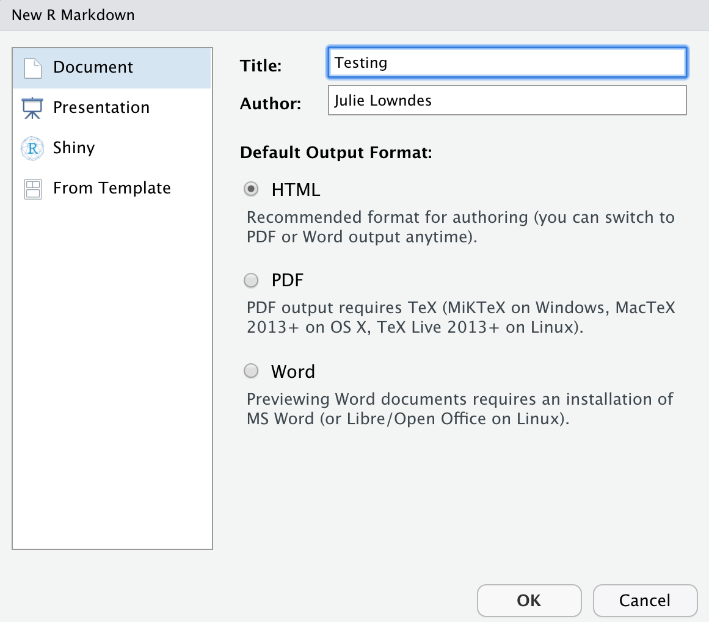
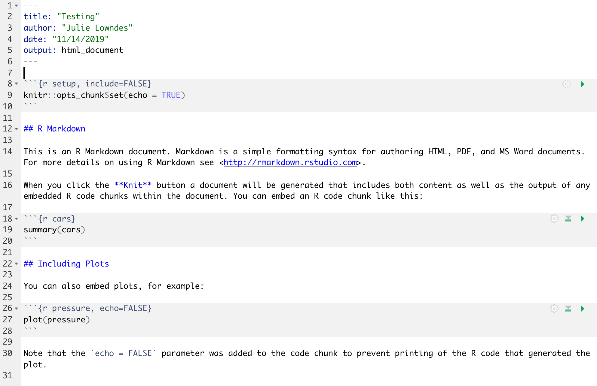
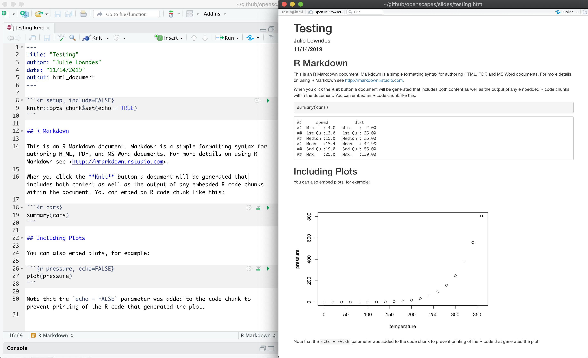

Chapter 4 RMarkdown
4.1 Summary (a few sentences)
Here we’ll learn RMarkdown, which helps you tell a story with your data analysis because you can write text alongside the code.
4.2 Objectives (more detailed, bulletpoints?)
4.3 Resources
4.4 Intro to RMarkdown
TODO (write out): Intro, knitting How it’s different from R Script (which we just created) How in-line figures are awesome (no copy-pasting from excel to word) Reproducibility is important (this might be new to some people). Reproducible research/self-contained Rmd files: read in data at the top. Read_csv.
An RMarkdown file will allow us to weave markdown text with chunks of R code to be evaluated and output content like tables and plots.
File -> New File -> RMarkdown… -> Document of output format HTML, OK.

You can give it a Title like “My Analysis”. Then click OK.
OK, first off: by opening a file, we are seeing the 4th pane of the RStudio console, which is essentially a text editor. This lets us organize our files within RStudio instead of having a bunch of different windows open.
Let’s have a look at this file — it’s not blank; there is some initial text is already provided for you. Notice a few things about it:
- There are white and grey sections. R code is in grey sections, and other text is in white.

Let’s go ahead and “Knit HTML” by clicking the blue yarn at the top of the RMarkdown file.

What do you notice between the two? So much of learning to code is looking for patterns.
Notice how the grey R code chunks are surrounded by 3 backticks and {r LABEL}. These are evaluated and return the output text in the case of summary(cars) and the output plot in the case of plot(pressure).
Notice how the code plot(pressure) is not shown in the HTML output because of the R code chunk option echo=FALSE.
The hashtag (#) at lines 12 and 22 cause the following text to be displayed larger and in bold.
This RMarkdown file has 2 different languages within it: R and Markdown.
We don’t know that much R yet, but you can see that we are taking a summary of some data called ‘cars’, and then plotting. We will focus on R for the rest of the workshop, but for the rest of this morning let’s focus on the second language.
The second language is Markdown. This is a formatting language for plain text, and there are only about 15 rules to know.
Notice the syntax for:
- headers get rendered at multiple levels:
#,## - bold:
**word**
There are some good cheatsheets to get you started, and here is one built into RStudio: Go to Help > Markdown Quick Reference
Important: note that the hashtag # is used differently in Markdown and in R:
- in R, a hashtag indicates a comment that will not be evaluated. You can use as many as you want:
#is equivalent to######. It’s a matter of style. I use two##to indicate a comment so that it’s clearer what is a comment versus what I don’t want to run at the moment. - in Markdown, a hashtag indicates a level of a header. And the number you use matters:
#is a “level one header”, meaning the biggest font and the top of the hierarchy.###is a level three header, and will show up nested below the#and##headers.
If this seems confusing, take comfort in the fact that you are already used to using #s differently in real life: it can mean “number” or “pound” or hashtags on social media.
Learn more: http://rmarkdown.rstudio.com/
4.4.1 Activity
- In Markdown write some italic text, make a numbered list, and add a few subheaders. Use the Markdown Quick Reference (in the menu bar: Help > Markdown Quick Reference).
- Reknit your html file.
4.4.2 Code chunks
OK. Now let’s practice with some of those commands that we were working on this morning.
Create a new chunk in your RMarkdown first in one of these ways:
- click “Insert > R” at the top of the editor pane
- type by hand ```{r} ```
- if you haven’t deleted a chunk that came with the new file, edit that one
Now, let’s write some R code.
x <- seq(1:15)Now, hitting return does not execute this command; remember, it’s a text file in the text editor, it’s not associated with the R engine. To execute it, we need to get what we typed in the the R chunk (the grey R code) down into the console. How do we do it? There are several ways (let’s do each of them):
- copy-paste this line into the console.
- select the line (or simply put the cursor there), and click ‘Run’. This is available from
- the bar above the file (green arrow)
- the menu bar: Code > Run Selected Line(s)
- keyboard shortcut: command-return
- click the green arrow at the right of the code chunk
4.4.3 Activity
Add a few more commands to your file from this morning. Execute them by trying the three ways above. Then, knit your R Markdown file, which will also save the Rmd by default.
4.5 Create a Rmd for our fish analysis
OK now let’s open a new RMarkdown file and begin some analyses.
- read in
- View()
fish_counts are what we call Tidy Data.
4.6 Tidy data
Tidy data has a simple convention: put variables in the columns and observations in the rows.

Uncount this data so that we can use it with pivot tables
TODO: Explore data: summaries/data table Uncount and count Why would you ever want to uncount? You don’t want to assume how future you will want to use this data How easy is it to get these counts by different groupings Simplest ggplot (introduced in readxl chapter)
4.7 Activity
- knit!
4.8 Fun facts (quirky things) - making a note of these wherever possible for interest (little “Did you know?” sections)
4.9 Interludes (deep thoughts/openscapes)
4.10 Interludes (deep thoughts/openscapes)
Comments! Organization (spacing, subsections, vertical structure, indentation, etc.)! Well-named variables! Also, well-named operations so analyses (select(data, columnname)) instead of data[1:6,5] and excel equivalent. (Ex with strings) Not so brittle/sensitive to minor changes.
4.10.1 RMarkdown video (1-minute)
Let’s watch this to demonstrate all the amazing things you can now do: